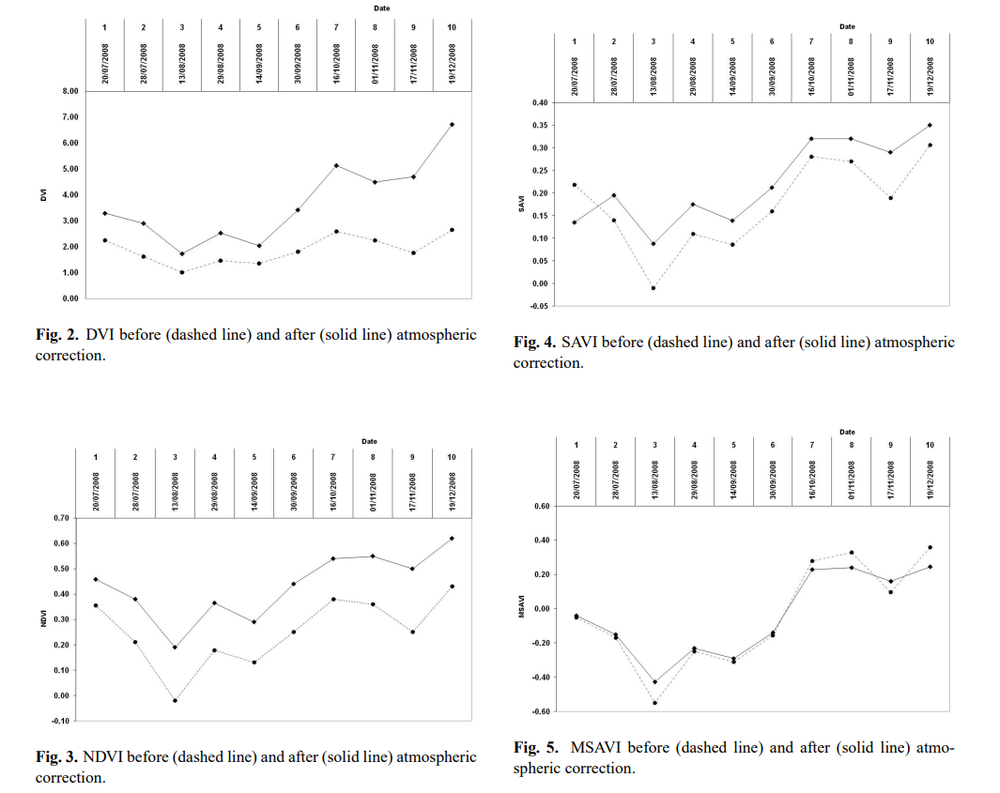

3 Corrections
Week3: 24&26/Jan/2024
Corrections and enhancement are the two main concepts in this week’s teaching. They are the pre-processing of EO data to ensure the data used in the classification/analysis is consistent and usable.
3.1 Summary
3.1.1 Corrections
4 types of corrections are Geometric, Atmospheric, Topographic and Radiometric.
3.1.1.1 Geometric corrections
- Geometric corrections
-
A process to adjust the imagery to correct distortions caused by sensor or terrain with reference to the ground central points (GCPs), to ensure the true location of features on Earth’s surface, usually, making off-nadir (the sensor is tilted at an angle to the Earth’s surface, which can result in distortions in the image due to parallax effects) to nadir (an image acquired with the imaging sensor pointing straight down, perpendicular to the Earth’s surface. The nadir angle =0 degrees).
Requirement: same resolution (resampling) and same CRS (reprojecting).
- Ground central point
-
A ground control point (GCP) is a location on the surface of the Earth (e.g., a road intersection) that can be identified on the imagery and located accurately on a map. (Objects (e.g. building) on the image that do not move, as the reference point of corrections.) - correction is basically doing linear regression to the coordination of GCPs.
- Image-to-map rectification
-
rectify remotely sensed data to a standard map projection
- Image-to-image registration
-
remotely sensed data used in conjunction with other spatial information in a GIS
- Forward mapping
-
X: original image -> Y: target image (input-to-output)
- Backward mapping
-
X: target image -> Y: original image (output-to-input)

- Mosaicking
-
Moisaicking is the process of combining multiple adjacent images into a single seamless composite. Two techniques are -
Cut-line feathering: cut the images along a common defined boundary line/object and blend them together > usually output is in a sharper transition > Applied in cases wihen a clear boundary / discontinuity between images (e.g. road/river)
Edge feathering: offset the edge of images by certain distance through filter or algorithm > usually output transition is more gradual and smoother > Applied in cases when a gradual transition exist in images (e.g. forest/agricultural land)
Finally, the corrected image is resampled to create a new image that accurately reflects the true location and orientation of features on the ground.
3.1.1.2 Atmospheric Corrections
- Atmospheric corrections
-
A process to mitigate the effect of atmospheric interference (haze, scattering and absorption) & to avoid loss of reflectance & signature extension thorough space and time (Jensen 2015). This method requires some knowledge of the atmospheric condition and sensors.
- Point Spread Function
-
Measured and modeled point spread functions (PSF) of sensor systems indicate that a significant portion of the recorded signal of each pixel of a satellite image originates from outside the area represented by that pixel. This hinders the ability to derive surface information from satellite images on a per-pixel basis (Huang et al. 2002).
- Relative
-
1) to normalize the intensities among the different bands within a single-date remotely sensed image, and 2) to normalize the intensities of bands of remote sensor data in multiple dates of imagery to a standard scene selected by the analyst.
Difference to Absolute atmospheric correction: does not require atmospheric data but instead relies on the comparison of images acquired at different times or from different sensors, assuming the relative differences in reflectance between different areas of an image remain constant over time (those changes are due to atmospheric interference).
Two techniques are -
Dark object subtraction (DOS): identify and subtract the digital number of dark object (like shadow not reflecting light) in the imagery from that of other features (at pixel level). Hence, the reflectance due to surface features is kept.
Multiple-date image normalization using regression: divide the reflectance values in each pixel by a value (mean/median reflectance of a group of pixels in that image).
Pseudo-Invariant Features (PIFs) selection = radiometric GCP
Requirements of PIF: 1) little changes through time; 2) similar elevation as other land in scene; 3) minimal vegetation; 4) in a relatively flat area.
- Absolute
-
Estimates the atmospheric properties and removes their influence from measured values to get true surface reflectance.
Requirement: atmospheric data obtained at the time of image acquisition
Empirical Line Calibration (ELC): establish a linear regression model to convert the digital numbers of the unknown pixels to actual physical units.
Requirements:
- Two or more areas in the scene with different albedos (e.g., one bright target such as sand and one dark target such as a deep, nonturbid water body) & as homogeneous as possible <- difficult.
- Sensor calibration coefficients
- Radiative transfer code (knowledge of sensor spectral profile & atmospheric properties at the time of data collection) (Jensen 2015)
3.1.1.3 Topographic Corrections (Orthorectification)
- Topographic corrections
-
A process to remove the effects of topographically induced illumination variation, which is usually conducted after atmospheric corrections (not always needed). (The amount and angle of solor illumination may vary due to topo. variations, affecting the measured values.)
Requirements: sensor geometry & elevation model
- Illumination
-
The cosine of the incident solar angle, thus representing the proportion of the direct solar radiation hitting a pixel.
Cosine Function: \(L_H = L_T*\frac{cosθ_O}{cosi}\)
\(i\): Sun’s incidence angle - cosine of the angle between the solar zenith and the normal line of the slope (smaller cos i -> greater over-correction (Jensen 2015))
\(L_T\): radiance (DN to TOA) from sloped terrain
- Zenith
-
\(θ_O\) : The solar zenith angle is the zenith angle of the sun, i.e., the angle between the sun’s rays and the vertical direction. Solar zenith angle is normally used in combination with the solar azimuth angle to determine the position of the Sun as observed from a given location on the surface of the Earth.
- Azimuth
-
The solar azimuth angle is the azimuth (horizontal angle with respect to north) of the Sun’s position.

3.1.1.4 Radiometric Calibrations
- Radiometric calibrations
-
A process to convert the raw and unitless digital numbers of pixel to radiance/reflectance that is comparable and can be used to analyze Earth’s surface, removing atmospheric noise.
TOA radiance -> TOA reflectance: no light
Surface reflectance: no light, no atmosphere
Hemispherical reflectance (e.g. in Labs)
Apparent reflectance
3.1.2 Enhancement
This is the process to improve visual quality of imagery to highlight feature of interest.
Techniques include -
Contract enhancement (e.g. done in QGIS in wk1): adjusting the range of pixel values in an image to span the full dynamic range.
Ratioing: divide / compare bands with each other, normalized surface reflectance. E.g. Normalised Difference Vegetation Index (NDVI).
Filtering: enhance specific features of interest. E.g. edge detection filters - sharpen the edges of features; smoothing filters - reduce noise or blur.
PCA: combine a large number of layers within datasets of the same spatial resolution.
Texture analysis: quantify spatial patterns/arrangements of pixel values in an imagery.
1st order occurrence: ✔️classification
Edge of building enhanced via 1st order variance
2nd order co-occurrence: ✔️classification improvement and additional info (to other bands), can then be used in PCA
Fusion: combine bands of multiple images of the same area or scene from different sensors or at different times (or layers from texture analysis), to create a single, high-quality image.
Pan-sharpening: fuse multispectral imagery with a panchromatic image (capturing all the visible wavelengths of light as a single grayscale image, with detailed information about the shape, size, and texture of features on the ground) of higher spatial resolution to increase the spatial resolution of the former whilst preserving its spectral information.
3.2 Application
Geometric Corrections: Redlining in the US.
The historical maps/plans were drawn by hands. Those maps were digitized through geometric corrections, allowing the research/manipulation of this database on housing policy relating to socio-economic wellbeing and zoning.

Atmospheric correction (and also other methods) should be used when needed. This method is especially important in cases with multi-temporal images. The degree of importance also depend on the aim of the outcomes. For instance in agricultural cases, different vegetation indices may react differently to the atmospheric effects, hence resulting in different sensitivity to atmospheric corrections (Hadjimitsis et al. 2010). The author calculated the mean values of the vegetation indices DVI, NDVI, SAVI, MSAVI and SARVI, for Akrotiri-Zakaki area, south Cyprus, consisting of citrus fruit trees, before and after the atmospheric correction (Fig below). A mean difference of 18% for the NDVI was recorded before and after the darkest pixel method was applied. Since NDVI has been widely used to several applications especially for agricultural monitoring, the mean difference of 18% between the atmospheric and non-atmospheric corrected values has a significant meaning. Before interpreting the outputs (e.g. growth patterns, evaporation, etc.), the pre-processing methods should be understood in all analysis to avoid mis-interpretation.

3.3 Reflection
Different methods of corrections are interlinked, finding some reference points/signatures to rectify the image. The detailed processes (like regressions and data collection methods) are difficult to digest (probably because not being practiced) while the software is available for corrections.
Although indices like NDVI mentioned above are widely used, the full information contained in remote sensing data is simplified (into 2 bands in the case of NDVI). Plus, some literature does not open the methodology, data and software (Wellmann et al. 2020). Those factors hinder the smooth collaboration between different actors. Full deployment and integration of remote sensing and urban governance could be enhanced through better knowledge and organisation of data, greater involvement of academic and non-academics from different disciplines and regions, and to legitimate/actually utilize the techniques in policy making and environmental impact assessments.